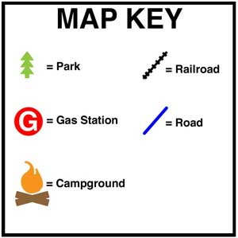

Teaching Point:
Today we will learn what a Map Key is and what it is used for.
What is a Map Key?
When a map shows you a place with a lot of things on it, sometimes it is easier to read if the map uses symbols instead of a realistic drawing. For example, if a zoo wants to show you where the tigers are on a map, they may just draw a tiger head, instead of a huge cage with many tigers in it. That way it is easy to find and easy to read the map.
A Map Key is a part of the map that tells you what the symbols mean. Most of the time, the map key is in the top or bottom corner of the map. In the Zoo Example, the map key would have a picture of a tiger head and next to it would say tiger cage. That way when you saw the tiger head on the map, you would know what it means. Map Keys help us make our maps easier to read.
Click here to see a Map Key ExampleTo make a Map Key in Kid Pix:
- Stamp one copy of each of your stamps in a neat row.
- Use the T Tool to write the name of the place that the stamp stands for next to each stamp.
- Use the T Tool to write Map Key on top of the map key.
Today's Assignment
Make a Map Key that shows what all of your stamps mean.
Extension Activity
Use your formatting skills to change the color, font, and size of the letters.
Back to School Portal